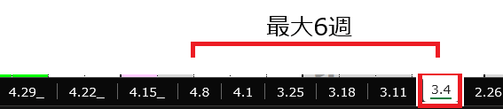
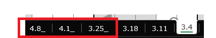
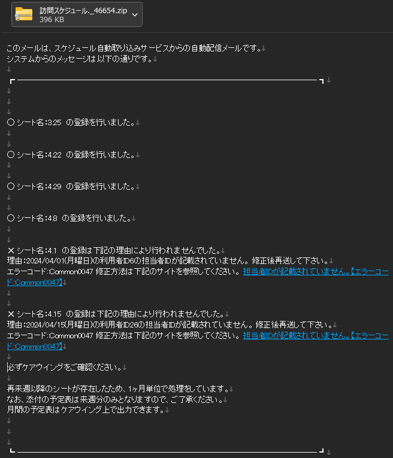

新機能 - 連続1ヶ月(6週)読込
本ドキュメントはスケジュール自動登録サービス(以下、本サービスと記載)に追加された下記の機能のマニュアルとなります。
・ 最大1ヶ月(6週)の連続読込機能
目次
1.変更点
・旧バージョンでは、翌週分のみの読込でしたが、新バージョンでは最大6ヶ月分の予定を一度に読み込むことができるようになりました。
・旧バージョンでは、翌翌週のシートがあった場合は無視していましたが、新バージョンでは読込を行います。
・エラーチェックは1シート毎に行います。ある1シートの表記に問題があった場合、そのシートはスキップされます。
・週間予定表は変わらず翌週分のみの出力となります。1ヶ月の予定表はケアウイングから出力してください。
・翌週分のみ予定があった場合は、旧バージョン同等の処理となります。
2.作成方法
・読込を行いたい週を最大6週間まで作成できます。
・読込みたくない場合は、シート名を読み込まない形にするとスキップできます。
下の例では読み込みしたくないシートに「_」をつけていますが、「M.d形式」（例「3.25」）以外であればどのような形でもよいです。
3.処理の流れについて
・1週ごとにエラーをチェックし、問題がない場合は登録します。
・問題があったシートは登録されません。
・初週に問題があった場合は、すべてのシートを登録せずに返送します。メッセージに沿って修正し、再度送付頂ければ大丈夫です。(登録が完了したシートがあっても問題ありあません。)
・下記の例では、3.25～4.29の予定を送付し、4.1および4.15のシートがエラーとなり、その他のシートは登録された形となります。
4.注意点
・誤ったIDや時間で送付してしまうと、誤った情報が最大1ヶ月分登録されます。見直しは慎重におこなってください。
・処理にかかる時間が長くなります。ご了承ください。
・初週に問題があった場合は、すべてのシートを登録せずに返送します。
・読み込ませたくない予定は必ずシート名を変更してください。
・翌々週以降のシートのみの場合は受付することが出来ません。必ず、翌週の予定がある状態で送付してください